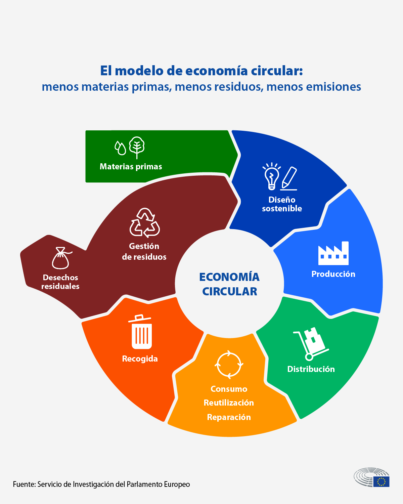

<link rel="stylesheet" href="estilo.css">
<header class="header">
   <div class="menu container">
     <label for="menu">
       
     </label>
     <nav class="navbar">
       <ul>
         <li><a href="#Introduccion" class="selected">Introducción</a></li>
         <li><a href="#Contaminacion">Contaminación</a>
           
         </li>
         <li><a href="#Tipos de contaminacion">Tipos de contaminación</a>
           <ul>
             <li><a href="CTMNC.Agua.html">Agua</a></li>
             <li><a href="CTMNC.Aire.html">Aire</a></li>
             <li><a href="CTMNC.Suelo.html">Suelo</a></li>
             <li><a href="Economia circular.html">Pagina principal</a></li>
             <li><a href="Gestion.html">Gestión de Residuos</a></li>
             <li><a href="RSDS.biomedicos.html">Residuos biomedicos</a></li>
             <li><a href="RSDS.electronicos.html">Residuos electrónicos</a></li>
           </ul></li>
       </ul>
     </nav>
   </div>
   <h2>Economia Circular</h2>
<p>
    La economía circular es un modelo económico que busca reducir al mínimo los residuos y el uso de recursos, promoviendo la reutilización,
     el reciclaje y la regeneración de los materiales. En lugar de la economía lineal tradicional, que sigue un esquema de "producir, usar y
      desechar", la economía circular propone un ciclo cerrado en el que los productos, componentes y materiales se mantienen en uso durante el
       mayor tiempo posible.


<h2>Principios de la Economía Circular</h2>
<p>
 1. Diseño para la durabilidad y reutilización: los productos se diseñan pensando en su durabilidad, reparación y posibilidad de actualización.
 <p>
2. Uso de materiales reciclables y biodegradables: en lugar de materiales que terminan en el vertedero, se emplean materiales que puedan ser
 recuperados o que regresen a la naturaleza sin dañarla.
 <p>
3. Regeneración de sistemas naturales: buscar prácticas que ayuden a restaurar y proteger el medio ambiente, como el uso de energías renovables
 y la agricultura regenerativa.
 <p> 
4. Extensión del ciclo de vida: maximizar la vida útil de los productos a través de su reparación, reventa y reciclaje.<p></p>
</p>
<p>
   <h2>Beneficios de la Economía Circular</h2> 

Reducción de residuos: menos residuos terminan en vertederos o en el medio ambiente, ayudando a combatir la contaminación.
Ahorro de recursos: se optimiza el uso de materias primas, lo que reduce la extracción de recursos naturales y el consumo de energía.
Innovación y empleo: se generan nuevas oportunidades de negocio en áreas como la reparación, reciclaje y creación de productos sostenibles.
Resiliencia económica: reduce la dependencia de recursos finitos y los precios volátiles, ofreciendo estabilidad a las economías.

</p>
<p>
   <h2>Ejemplos de Economía Circular </h2>
<p>Productos de segunda mano y reacondicionados:</p>
 como en la industria tecnológica o la moda, donde artículos ya usados se reacondicionan o venden para alargar su vida útil.
Modelos de consumo colaborativo: como el alquiler de bienes (autos, herramientas) en lugar de comprar y desecha
Upcycling o suprarreciclaje: transformación de residuos en nuevos productos con valor añadido, como ropa, muebles o accesorios hechos de materiales reciclados.
La economía circular representa un cambio hacia un sistema económico más sostenible y eficiente, que aprovecha los recursos al máximo y reduce la presión sobre el medio ambiente.
 
</p>
